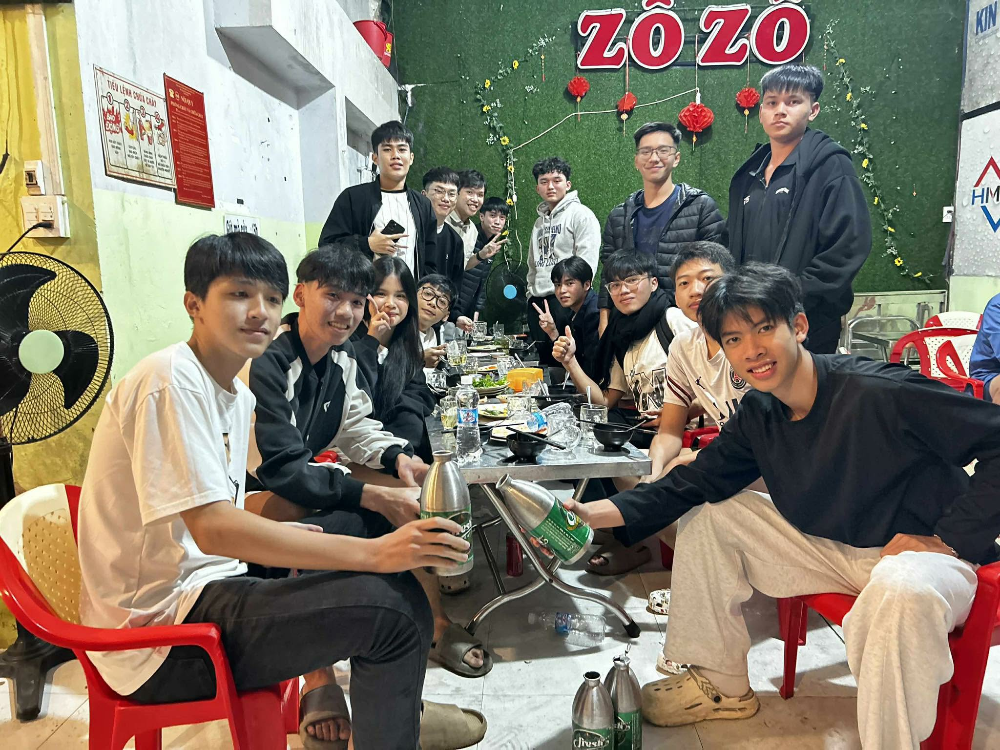
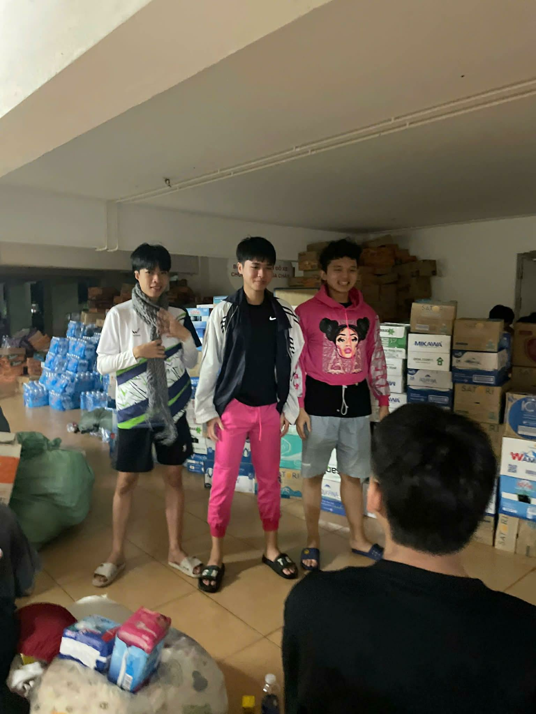
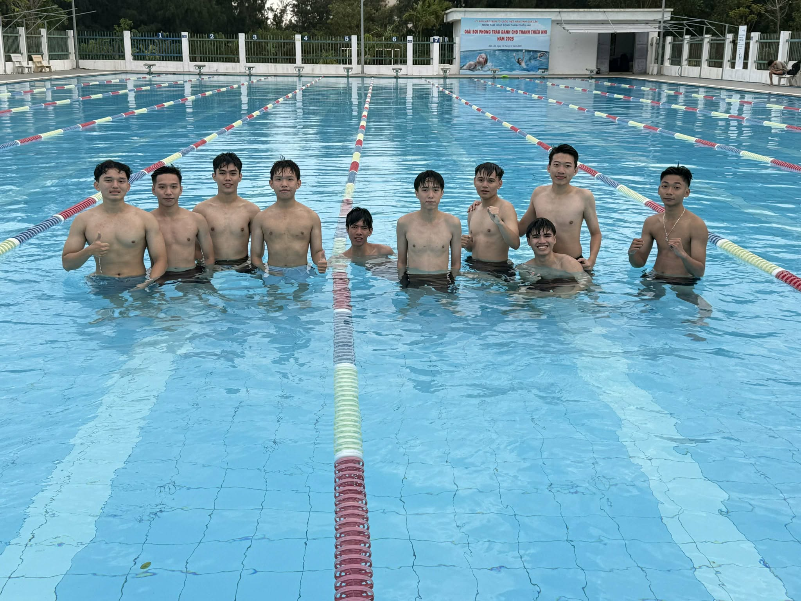

Bước chân vào cánh cổng trung học phổ thông, tôi – Huỳnh Lưu Nguyên, hay được
bạn bè gọi với cái tên thân thuộc là “Lưu Manh” – mang theo nhiều hơn
cả một chiếc cặp sách. Đó là sự lo lắng, lạc lõng và cả những câu hỏi không
lời đáp về việc mình sẽ thuộc về đâu trong một môi trường hoàn toàn mới.
Năm đầu THPT là quãng thời gian không hề dễ dàng. Bạn bè mới, cách học mới,
áp lực mới. Tôi từng là người đứng lặng trong một tập thể đông người,
không biết bắt chuyện ra sao, không đủ tự tin để thể hiện bản thân.
Có những ngày đi học về chỉ thấy mệt mỏi, hoài nghi chính mình,
tự hỏi liệu mình có đang đi đúng hướng hay không.
Nhưng tuổi trẻ là vậy, không phải để tránh né khó khăn, mà là để học cách
bước qua chúng. Tôi dần học cách mở lòng, học cách lắng nghe,
học cách chấp nhận rằng ai cũng cần thời gian để thích nghi.



🔥 Nỗ lực thay đổi bản thân
Khi đã quen dần với môi trường mới, tôi nhận ra rằng nếu không thay đổi,
tôi sẽ mãi đứng yên tại chỗ. Tôi bắt đầu quan tâm hơn đến hình thể,
tập luyện nhiều hơn, rèn cho mình kỷ luật – thứ mà trước đây tôi chưa
từng coi trọng.
Không phải ngày nào cũng tràn đầy động lực. Có những hôm mệt mỏi,
có lúc muốn bỏ cuộc. Nhưng mỗi lần nhìn lại quãng đường đã đi qua,
tôi hiểu rằng mọi cố gắng dù nhỏ cũng đang góp phần tạo nên một phiên bản
tốt hơn của chính mình.
Song song với đó là hành trình cải thiện khả năng học tập.
Tôi học cách sắp xếp thời gian, học cách chịu trách nhiệm với tương lai của mình,
học cách không đổ lỗi cho hoàn cảnh. Cấp 3 không chỉ dạy tôi kiến thức,
mà dạy tôi cách trưởng thành.
💙 Thanh xuân là những con người ở lại
Điều quý giá nhất trong hành trình ấy không phải là thành tích,
mà là những con người đã xuất hiện. Những buổi cười đùa,
những lần cùng nhau vượt qua áp lực, những kỷ niệm tưởng chừng rất nhỏ
nhưng sau này nhớ lại mới thấy vô giá.
Thanh xuân cấp 3 khép lại, nhưng hành trình của Lưu Manh thì vẫn tiếp tục.
Tôi mang theo những bài học, những ký ức và cả một niềm tin rằng:
dù phía trước có ra sao, tôi đã từng sống trọn vẹn với tuổi trẻ của mình.